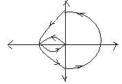

7.11.1 : Title of the experiment: Nyquist diagram using MAT LAB software.
7.11.2: Aim of the experiment: Plotting of Nyquist diagram for the given transfer function and verification using theoretical calculations, Using MAT LAB software .
.
7.11.3 : List of equipments required to conduct the experiment with their
Specification:
Pentium based PC and MATLAB software version 5.1 or 6.1
7.11.4: Experimental setup with naming of all parts: ---- Not required ------
7.11.5: Theoretical background for the experiment/validation of the experiment:
The map locus obtained in F plane by mapping all the points on Nyquist path with the help of given transfer function is called Nyquist plot.
The concept of Nyquist diagram is based on polar plot which can be conveniently applied to the stability analysis for any kind of system. It utilizes mapping theorem effectively to develop a criterion to study the stability of control system in frequency domain.
7.11.7: Procedure to carry out the experiment:
The following program is entered,
%Rig Nyquist plot
num = [ 0 0 0 10 ]
den = [ 1 3 2 0 ]
Nyquist (num, den):
V= [-4 4 4 4]
% axis (V)
Grid
Zoom on
Tittle (‘Nyquist Plot ‘ )
xlabel (“Real axis “)
ylabel (“Imaginary axis “)
7.11.8 : Table of observation: ---- Not required ------
7.119: Specimen calculations:
10
G (S) = --------------
S(S+1) (S+2)
Step 1: No. of poles on right side = 0
Step 2: N=P=0 for Stability
10
Step3: H (jw) G (jw) = ------------------------
(jw) (jw + 1)(jw + 2)
tan-1 w/0 tan-1 w/1 tan-1 w/2
= -90- tan –1w- tan-1 w/2
for w= +¥, 0< -270
w= +0, ¥< -90
Anticlockwise rotation
And
for w= +0, ¥<-90
w= -0, ¥<+90
Anticlockwise rotation.
Step4: Rationalizing G (jw) H (jw)
Wpc = Ö2 and point Q= -1.66.
Step5: The number of encirclements of -1+j0 are, N=2 but for stability N=0
Therefore given system is unstable.
7.11.10: Plotting the Graph:

7.11.11: Discussion of results and conclusion:
From the above experiment it has been observed that using MATLAB analysis of Nyquist diagram can be made very easily.
From the above experiment we have also observed that the position of poles will decide about the stability of the system.